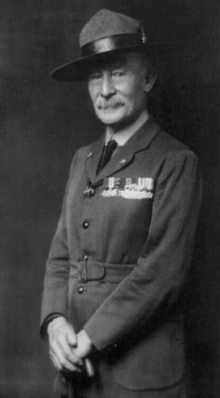
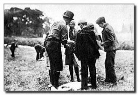
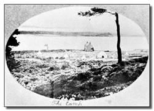
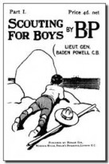
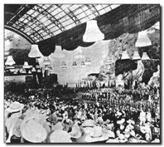
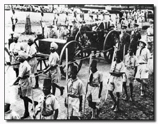

<div class="container-fluid">
    <div class="row">

        <div class="card text-bg-light">
            <div class="card-body">
                <h1 class="titCard">Baden Powell</h1>
                <h4 class="col-lg-12 col-md-12 col-sm-12">
                    <div class="row">
                        <p class="textoP col-lg-8 col-md-8 col-sm-8"><strong>Robert Stephenson Smith Lord Baden-Powell
                                of Gilwell</strong> conegut per les
                            sigles B.P., naixquè al <a class="linkS"
                                href="https://www.google.es/maps/@51.5123834,-0.1737249,3a,90y,316.04h,107.53t/data=!3m6!1e1!3m4!1siM_GRD8IIOnx2fMv5Lfp3Q!2e0!7i13312!8i6656"
                                target="#&quot;"> nº 6 de Stanhope Street (actual nº 11 de Stanhope Terrace) </a>, al
                            barri
                            londinenc de Paddington, el 22 de febrer del 1857. Era el sisè fill home, i el huitè dels
                            deu fills
                            del reverend H.G. Baden-Powell, professor a l'Universitat d'Oxford. Sa mare era filla del
                            almirant
                            W. T. Smyth i néta de Joseph Brewer, explorador de América. El seu fadrí fou Robert
                            Stephenson, fill
                            de George Stephenson, un pioner en el transport por ferrocarril. Baden Powell va ser, per
                            tant, el
                            descendent d'un religios, per un costat i d'un aventurer colonitzador del Nou Món, per
                            l'altre.
                        </p>
                        
                    </div>
                </h4>

                <h1 class="titCard">El xiquet Baden Powell</h1>
                <h4 class="col-lg-12 col-md-12 col-sm-12">
                    <div class="row">
                        <p class="textoP col-lg-8 col-md-8 col-sm-8">B.P. quedà orfe de pare als tres anys d'edat,
                            esdevenint la família sense
                            massa recursos econòmics. B.P. va rebre el seu primer ensenyament escolar de sa mare, i més
                            endavant començà a assistir a l'escola de <a class="linkS"
                                href="http://www.rosehillschool.co.uk/" target="#&quot;">Rose Hill</a>, a Tunbridge
                            Wells. Als tretze anys va obtindre una beca
                            per a estudiar a l'escola <a class="linkS" href="http://www.charterhouse.org.uk/"
                                target="#&quot;">Charterhouse</a>. A l'inici aquesta escola es trobava a Londres, però
                            al 1872 es traslladà al camp, concretament a Godalming, a Surrey.<br>
                            B.P. no va ser un estudiant distingit, ja que els seus professors descobriren
                            la seua facilitat per a dormir durant les lliçons. És un bon company i el que més i millors
                            iniciatives aporta a la colla d'estudiants. Sempre estava desitjant aprendre coses noves.
                            Tocava el piano i el violí. Actuava en obres teatrals fent qualsevol tipus de personatge.

                        </p>
                        
                        <p class="col-lg-12 col-md-12 col-sm-12 textoP mt-3">El fet de trobar-ser més a prop de la
                            naturalesa
                            resultà decissiu per a sa vida. Els llocs més freqüents per als seus jocs son els boscos que
                            rodejen l'escola. A Charterhouse va començar a desenvolupar el seu interés per l'exploració
                            i el coneiximent de la naturalesa. Als boscos de les rodalies de l'escola, B.P. s'amagava
                            dels seus mestres, caçava i cuinava conills sense delatar el seu amagatall. Durant les
                            vacances tampoc perdía el temps. Sempre anava cercant aventures amb els seus germans. En una
                            ocasió, efectuaren una eixida en barca por la costa sur d'Anglaterra. També remontaren el
                            Tàmesis en canoa fins al naiximent del ríu. Tals aventures a l'aire lliure certament no eren
                            freqüents entre els joves d'aquella època. Les tècniques i arts que va aprendre li van ser
                            de molta utilitat en la seva vida posterior. En resum, va viure una adolescència
                            privilegiada, sempre a l'aire lliure, en companyia dels seus germans, recorrent i acampant
                            amb ells en molts llocs d'Anglaterra.</p>
                    </div>
                </h4>

                <h1 class="titCard">Carrera militar</h1>
                <h4 class="col-lg-12 col-md-12 col-sm-12">
                    <div class="row">
                        <p class="col-lg-8 col-md-8 col-sm-8 textoP">En acabar la seua educació, ja en 1876, es va
                            presentar a unes proves per entrar a l'exèrcit i
                            va treure el segon lloc per a Cavalleria entre centenars d'aspirants. De seguida se'l va
                            destinar a l'Índia, sense haver de passar pels cursos d'entrenament oficials, com subtinent
                            del
                            13è Regiment d'Hússars, del quin més endavant seria nomenat Coronel d'Honor.
                        </p>
                        
                        <p class="col-lg-8 col-md-8 col-sm-8 textoP">Entre les seues tasques, com un jove oficial
                            especialitzat en l'exploració,
                            elaboració de mapes i reconeixement del terreny, estava la formació d'altres soldats per a
                            tals labors. Els mètodes de B.P. no eren ortodoxos per a aquells temps: dividia la tropa al
                            seu càrrec en petites unitats, a les quals anomenava patrulles. Aquestes patrulles
                            treballaven juntes sota la direcció d'un guia, que era el soldat més preparat de la mateixa.
                            En acabar una tasca es premiava aquells soldats o patrulles que ho fessin bé. Les insígnies
                            amb què B.P. recompensava la destresa dels seus pupils recordaven el símbol tradicional del
                            punt nord en la brúixola, una flor de lys molt semblant a l'actual emblema scout mundial. En
                            1883 és ascendit a capità, a l'edat de 26 anys. <br> Durant els següents anys li van
                            destinar als
                            Balcans, Sud-àfrica i Malta. En 1889 rep el comandament del 5è Regiment de Dragons, amb
                            guarnició en Merut (Índia). Servint en aquest destacament escriu un llibre titulat "Aids to
                            Scouting" ("Manual per a explorar"). En aquest llibre detalla el seu mètode de formació per
                            a joves soldats i exploradors.</p>
                        
                    </div>
                </h4>

                <h1 class="titCard">El setge de Makefing</h1>
                <h4 class="col-lg-12 col-md-12 col-sm-12">
                    <div class="row">
                        <p class="textoP col-lg-8 col-md-8 col-sm-8">Deu anys després (1899) és destinat una altra
                            vegada a Àfrica per ajudar a defensar la ciutat de Mafeking, assetjada pels boers. Mafeking
                            era una xicoteta plaça forta britànica que havia quedat aïllada, envoltada per nombrosos
                            atacants. Durant els 217 dies que va durar el setge, Baden-Powell es va veure obligat a
                            demanar i confiar serveis als joves de Mafeking. La valentia i els recursos mostrats pels
                            xiquets del cos de missatgers de Mafeking van deixar una profunda empremta en ell. Les
                            gestes de B.P. arriben a Anglaterra quan després de l'heroica resistència de Mafeking, els
                            reforços dels coronels Plumer i Mahon alliberen la ciutat al maig del 1900. Baden-Powell és
                            ascendit al grau de General Major i convertit en Heroi de l'Imperi Britànic.
                        </p>
                        
                    </div>
                </h4>

                <h1 class="titCard">Tornada a inglaterra</h1>
                <h4 class="col-lg-12 col-md-12 col-sm-12">
                    <div class="row">
                        <p class="textoP col-lg-8 col-md-8 col-sm-8">Quan tornà a Anglaterra al 1903 s'havia convertit
                            en un heroi nacional, però descobreix amb sorpresa que el llibre que va escriure en Merut,
                            dedicat a la formació castrense, era usat com a llibre de lectura pels professors de tot el
                            país per a estimular l'observació i les habilitats en la naturalesa dels estudiants. I el
                            que és més, els dirigents de les Brigades Juvenils Catòliques l'utilitzen com a mitjà i
                            instrument educatiu dels seus joves. Baden-Powell s'entrevista amb el Cap Nacional
                            d'aquestes brigades, Sir William Smith, per tal de fer-li veure que el seu llibre no va ser
                            escrit per ser un sistema educatiu per als xiquets i joves, Sir William Smith li va
                            respondre: 'Doncs bé, accepte-ho en realitat així'. En arrel d'aquesta entrevista, i per
                            suggeriment del propi Sir William Smith, Baden Powell pensa en escriure un llibre més
                            apropiat per als xics, que els ensenye a ser forts, valer-se per si mateixos, poder estar a
                            punt per a servir els altres, i forjar així ciutadans responsables i lliures.
                        </p>
                        
                    </div>
                </h4>

                <h1 class="titCard">Brownsea i el escoltisme per als xics</h1>
                <h4 class="col-lg-12 col-md-12 col-sm-12">
                    <div class="row">
                        <p class="textoP col-lg-12 col-md-12 col-sm-12">L'any 1905 es posa mans en l'obra i després de
                            repetides entrevistes amb
                            pedagogs i canvis d'impressions amb dirigents d'associacions juvenils, es decideix a posar
                            en pràctica de forma experimental el seu mètode per a adolescents. En l'estiu de 1907, des
                            dels dies 1 al 8 d'agost, portà amb ell a un grup d'entre vint i vint-i-cinc xics (només es
                            conserva informació de 20 assistents) a l'illa de Brownsea, al Canal de la Mànega. Els
                            participants provenien de diferents classes socials i van ser dividits en 4 patrulles,
                            cadascuna de les quals tenia un guia. A més de B.P., al campament van assistir altres 3
                            adults. Este <a class="linkS" href="http://wiki.larocadelconsejo.net/?title=Brownsea"
                                target="#&quot;">campament a Brownsea</a> serà considerat l'acte fundacional de
                            l'Escoltisme o Moviment Scout.</p>

                        <p class="textoP col-lg-12 col-md-12 col-sm-12">
                            El campament va ser un gran èxit, tan rotund que Baden Powell decideix afegir les seues
                            experiències en aquest campament al llibre que estava escrivint. Finalment en 1908 publica
                            'Scouting for boys' (Escoltisme per als xics). Aquest llibre es publica en sis fascicles
                            quinzenals, anomenades fogates. La demanda va ser tan gran que en el mateix any es va editar
                            com a llibre complet. Les vendes del llibre van ser molt importants i a la fi de 1908 ja
                            s'havia traduït a 5 idiomes.
                        </p>

                        <p class="textoP col-lg-12 col-md-12 col-sm-12">
                            La popularitat de B.P. entre els joves va suscitar un interès en la societat anglesa. Encara
                            abans d'aparèixer en les vitrines de les llibreries i en els quioscos de revistes, de forma
                            espontània, grups d'adolescents s'uniren formant patrulles scouts per posar en pràctica les
                            idees proposades per Baden Powell. El que s'havia pensat per a l'ensinistrament
                            d'organitzacions ja existents (les Brigades Juvenils i Y.M.C.A. fonamentalment) es va
                            convertir finalment en el manual d'un nou moviment mundial.
                        </p>
                    </div>
                </h4>

                <h1 class="titCard">B.P i la difusió de l'escoltisme</h1>
                <h4 class="col-lg-12 col-md-12 col-sm-12">
                    <div class="row">
                        <p class="textoP col-lg-12 col-md-12 col-sm-12">Al setembre de 1908, B.P. va obrir una oficina per
                            atendre l'enorme nombre de preguntes que li arribaven des de les patrulles o tropes que
                            anaven apareixent pel país. A l'any següent, el 1909, s'organitza la primera exhibició de
                            scouts al Crystal Palace de Londres. A la cita van 11.000 scouts de tota Anglaterra. Algunes
                            xiques assistixen a aquesta reunió sol·licitant a B.P. prendre part de l'Escoltisme. Sorgeix
                            aleshores el Guiatge, un sistema de treball ideat pel propi Baden-Powell amb la seua germana
                            Agnes.
                        </p>

                        <p class="textoP col-lg-12 col-md-12 col-sm-12">L'Escoltisme es va extendre amb rapidesa per
                            l'Imperi Britànic. Baden Powell, que fins eixe moment havía dividit el seu temps entre les
                            obligacions de la vida militar i l'animació del naixent escoltisme, es va veure forçat a
                            triar. Al 1910, amb 53 anys d'edat i aconsellat pel rei Eduard VII, Baden Powell s'adonà de
                            que l'Escoltisme anava a ser la seua gran obra. Va reconèixer que podia fer més per la seva
                            pàtria educant les generacions futures, perquè els seus components es convertiren en bons
                            ciutadans, que entrenant homes per convertir-los en bons soldats. I per tant, va renunciar
                            al seu lloc en l'exèrcit on ja ostentava el grau de Tinent General.
                        </p>

                        <p class="textoP col-lg-12 col-md-12 col-sm-12">El 1912, B.P. es casa amb Miss Olave Saint Clair
                            Soames. Ella va ser una constant ajuda i companyia en el seu treball. Van tenir tres fills
                            (Peter, Heather i Betty). En aquest mateix any, Baden Powell va fer un viatge al voltant del
                            món per conèixer als scouts de molts països i per fomentar la creació del Moviment Scout en
                            altres tants. Eren els principis de la Germanor Scout Mundial.
                        </p>

                        <p class="textoP col-lg-12 col-md-12 col-sm-12">La Primera Guerra Mundial va poder haver detingut
                            el Moviment, però la formació rebuda a través del sistema de patrulles va provar la seua
                            vàlua. Els guies de patrulla es van fer càrrec dels seus patrullers quan els adults es van
                            anar al servei actiu. Els scouts van contribuir de moltes maneres en l'esforç de la guerra.
                            El més notable potser van ser els serveis que els scouts marins van fer com a guardacostes.
                            En aquest temps se li presenta a B.P. un problema: Què fer amb els germans menuts dels
                            scouts, que els acompanyen amb gran entusiasme en moltes de les seves activitats? La
                            resposta a aquesta pregunta va ser la creació, el 1916, de la Manada, la branca dels
                            llobatons, ambientada al 'Llibre de les Terres Verges', de Rudyard Kipling, i la publicació
                            del 'Manual del Llobató'. Posteriorment B.P. observarà també que alguns joves senten
                            abandonar la tropa scout en complir els seus disset anys, de manera que sagaçment crearia,
                            al 1922, una etapa especial per a joves anomenada Roverisme, escrivint per a ells la seua
                            obra 'Roverisme cap a l'èxit'. D'aquesta manera, el Moviment Scout es presenta com una
                            completa organització educativa per a la joventut.
                        </p>
                    </div>
                </h4>

                <h1 class="titCard">Baden Powell, cap scout mundial</h1>
                <h4 class="col-lg-12 col-md-12 col-sm-12">
                    <div class="row">
                        <p class="textoP col-lg-12 col-md-12 col-sm-12">
                            El 1920 els Scouts de tot el món es van congregar a Londres en la primera reunió
                            internacional; el primer 'Jamboree Mundial'. L'última nit d'aquest Jamboree, el 6 d'agost,
                            B-P va ser proclamat Cap Scout Mundial per una entusiasta multitud de joves. Es van celebrar
                            diversos Jamborees, el 1924 a Dinamarca, el 1929 a Anglaterra, el 1933 a Hongria, el 1937 a
                            Holanda; en cadascú d'aquests Jamborees, Baden Powell era la figura central, saludat pels
                            seus scouts allà on ho veien. Però els Jamborees només constitueixen part de l'esforç per
                            constituir la Germanor Scout Mundial. Baden Powell viatjava incessantment en pro de
                            l'escoltisme, que existia en gairebé tots els països no totalitaris del món, i sostenia
                            correspondència amb els seus caps en nombrosos països i continuava escrivint sobre temes
                            scouts.
                        </p>
                    </div>
                </h4>

                <h1 class="titCard">Els ultims anys</h1>
                <h4 class="col-lg-12 col-md-12 col-sm-12">
                    <div class="row">
                        <p class="textoP col-lg-12 col-md-12 col-sm-12">
                            Quan finalment va complir l'edat de 80 anys, les seues forces van començar a declinar. Va
                            tornar a la seua estimada Àfrica amb la seua dona, Lady Baden Powell, qui havia estat la
                            seua col·laboradora en tots els seus esforços i qui a més, era la Cap Mundial de les Guies
                            (xiques scouts). Es van establir a Kenya, en un lloc tranquil amb una bella perspectiva de
                            milles de bosc que condueixen a muntanyes de pics nevats. Açí va morir Baden Powell el 8 de
                            gener de 1941, una mica abans de fer els vuitanta-quatre anys. En la seua tomba es va
                            assenyalar el símbol de final de pista, com signatura d'una missió acomplida en favor de la
                            nova joventut de tot el món.
                        </p>
                    </div>
                </h4>

            </div>
        </div>

    </div>


</div>